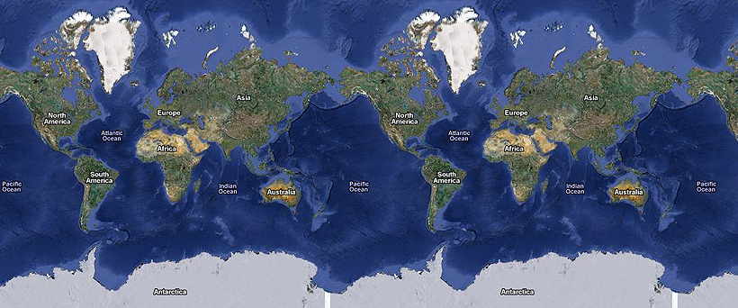

HERE, THERE, AND (OVER) THERE
“I like to drink to suit my location.” – Tom Jones

ここ, そこ, ＆ あそこ. Does this pattern sound familiar? Perhaps これ, それ ＆ あれ ring a bell? These are similar concepts, but ここ, そこ, and あそこ mean “here, there, & over (there).”
Let’s take a look back at what we’ve learned already.
これ ＝ this
それ ＝ that
あれ ＝ that (over there)
Also, we learned the other version of this, that, & that (over there):
この ＝ this (thing)
その ＝ that (thing)
あの ＝ that (thing) over there
Following a similar pattern, let’s take a look at what we’re learning today:
ここ ＝ here (where the speaker is)
そこ ＝ there (where the person you’re speaking to is)
あそこ ＝ over there (someplace where both the speaker and person you’re speaking to are not).
Of course, location is all relative. Depending on the location you’re talking about, ここ could be a place that both you and the person you’re speaking to are in. For example, if both of you are in America, you would still say “This (here) is America” and not “That (there) is America.”
ここはアメリカです。
This (here) is America. ← You, the speaker, are in Americaそこはフランスです。
That (there) is France. ← The person you’re speaking to is in Franceあそこは日本です。
That (over there) is Japan ← Neither you or the person you are speaking to is in Japan. It’s away from both of you.※ Go ahead and make three similar sentences to the ones above, using BIG locations, like countries, planets, galaxies, etc! Remember, if you’re in it, you’ll use ここ (no matter how big it is!)
And, of course, we can get more specific about the location as well.
ここは病院です。
This (here) is a hospital.あそこは私の学校です。
That over there is my school.※ Go ahead and make two similar sentences to the ones above, using more specific locations.
Besides stating where you are (or where someone else is), you can also use these to describe a general location. For example:
ここは寒い（さむい）です。
Here is cold (i.e. It is cold here).あそこは暖かい（あたたかい）！
It’s warm over there!ここは面白いよ！
It’s interesting / cool here! (The よ at the end, if you remember, puts emphasis on what you’re saying. “It’s cool here, you know!”)※ Go ahead and create two sentences similar to the sentences above and describe a place or location.
If you remember, back in Season 2 we talked about は versus が. In sentences like the above, there is a lot of opportunity for making mistakes (regarding は and が, and which one you should use). Remember the difference between them?
は emphasizes what comes after it and talks about something.
が emphasizes what comes before it and identifies something.
That being said, let’s take a look at some more sentences:
ここが痛い（いたい）です。
There is pain here. ← in this sentence, we are identifying where the pain is. ここ, which comes before the が is the thing that is “emphasized,” because it is most important. It’s already established that you have pain, but where the pain is? Well, that’s what we’re identifying by using the が particle instead of the は particle. On the other hand, if we did use は…ここは痛い（いたい）です。
There is pain here. ← Technically means the same thing (in English, anyways), but has a slightly different feel to it. Of course, we’re using the は particle, which means the emphasis goes after the は (i.e. the fact that something hurts is the most important thing). In this sentence, the other person probably didn’t know you were in pain, and you’re talking about your pain (and telling someone that you have it). The location of the pain isn’t as important as the pain itself. After that, if someone asked どこが痛いですか (where is the pain?) then you’d want to reply ここが痛いです, because now you’re identifying the pain.
Because ここ, そこ, and あそこ have to do with location, you’ll also see times where the で particle is used. You got a brief explanation in the previous chapter, and you’re about to get another brief intro here as well, but essentially, で is used when you are doing something at a location, or by way of something: At a restaurant, drive by way of car, etc. Whenever the thing that you’re doing hinges on the location, で is probably the particle you want to use. Let’s take a look at some examples here.
ここで食べます。
I will eat here.このレストランで食べます。
I will eat at this restaurant.ここで止まらない！
(I) won’t stop here!車（くるま）で行きます。
(I) will go by way of car.※ Using で make two similar sentences to the ones above.
Let’s try and practice a bit. Can you figure out which particle to use with the following sentences?
あそこ＿行きます（いきます）
に, because you are going somewhere. You are moving, and that means you’ll be using the に particle
マクドナルド＿飲みます（のみます）
で, because you are doing something at the McDonald’s. Because you are drinking here, you would use the で particle.
ここ＿楽しい（たのしい）ですね！
は, (probably). You are saying it is fun here, and since everyone knows you are here, already, you’d want to use the は particle and emphasize what comes after it (the fact that “here is fun.” Besides, you aren’t identifying anything, so the は particle is way more appropriate.
あそこ＿私＿大学（だいがく）です。
は & の. That (over there) is my college / university.
どこ, Where.
There is one last thing to go over before you move on to the story portion below. どこ means “where.” It’s sort of the location-based version of なに (what), and can be used in the same sort of ways.
これ は なん ですか？
What is this?ここ は どこ ですか？
Where is here? (i.e. Where am I?)あそこはどこですか？
Where is that (over there)?ボッビーさんはどこですか？
Where is Bobby?私のペンはどこですか？
Where is my pen?
How would you ask, “Where is Smith?”
スミスさんはどこですか？
How would you ask, “Where is the car?”
車はどこですか？
Great, so now that you’ve learned ここ, そこ, あそこ, and どこ, it’s time to put them to use in conversation practice. If you remember in the previous chapter, Mary disappears after talking to Takeshi (she just wanted to make a new friend!). Only two new characters introduced in this chapter, and they aren’t super important so they won’t get their own character bio…yet. But, if you need a refresher on the main folks (so far, anyways), take a look at the previous chapter. As you go through, if you don’t understand a particular word, feel free to look it up, but don’t look up everything! You should understand a good portion of the content below, and even if you struggle through the first time you’ll learn more that way.
——————
Story: Part 2
Where Is Mary?
Mary is gone. Takeshi gets up and starts walking away. Physics Professor Hayashida-sensei jumps out of the bushes (that’s where he lives and sleeps) and yells:
林田先生：お前はだれですか？ メアリーさんはどこ！？
Takeshi doesn’t stop, and keeps walking. Hayashida-sensei runs after, but the peg-leg is slowing him down.
林田先生：くそ、足が痛い。
He stops running because of the pain, and Takeshi walks off into the darkness. Hayashida-sensei reaches for his cell phone.
林田先生：ああぁあ。携帯電話はどこだろう？携帯ちゃん．．．どこ？どこ？
携帯ちゃん：ここだよ。ここだよ先生！
Obviously, Hayashida-sensei is on the wrong side of the insanity fence.
林田先生：お！よかった！携帯ちゃんを見つけた！なぜそこにいる？
携帯ちゃん：私はここが大好きですよ！林田先生の臭いが強い！
林田先生：そうか．．．オ！携帯ちゃん。警察に電話してください。
携帯ちゃん：分かりました！警察に電話します！
Hayashida-sensei calls the police, but nobody picks up. Maybe that’s because his phone isn’t a phone, but a rock. Meanwhile, back in Takeshi’s secret lair (i.e. his mom’s house)…
Mysterious Voice: たけしくん、今どこにいますか？
たけしさん： ここは私の部屋です。
Mysterious Voice: メアリーさんはどこですか？
たけしさん： メアリー．．．メアリーを殺しました。
Mysterious Voice: 違う。体はどこですか？
たけしさん： 体は．．．
Mysterious Voice: 体は．．．なに？
たけしさん： 体を忘れました．．．
Mysterious Voice: オー・マイ・ゴッド。
At that moment, Hayashida-sensei tripped over something on the way back to his bush home.
——————
Line-By-Line Explanation
林田先生：お 前はだれですか？ メアリーさんはどこですか！？
“Who are you? Where is Mary?” It was brushed over pretty quickly, but maybe you remember some of the alternate ways to say “you” in Japanese? お前（おまえ） is a (sometimes) angry way to say “you,” which makes sense since Hayashida-sensei just saw something he shouldn’t have seen. だれ means “who” and is used in much the same way as なに or どこ. (someone)はだれですか is a good set phrase to learn. Hayashida-sensei then goes on to ask: “Where is Mary?” If you were paying attention at all in this chapter, you’ll know how to ask this already.
林田先生：く そ、足が痛いんだ。
“(Shoot), (my) leg hurts” … where “shoot” is a nicer version of the actual word. Funny thing about the Japanese language: swear words aren’t as taboo nor are they really “swear words” in Japanese. I’m just covering my… er… butt here, just in case you’re a little kid reading this. You get my drift though.
足（あし）が痛い（いたい）. “My leg hurts.” Remember, when using が, it means you’re identifying something (and that something is the thing right before the が, in this case his leg). Here, his leg is the thing that’s in pain, so he’s identifying that.
林田先生：あ あぁあ。携帯電話はどこだろう？携帯ちゃん．．．どこ？どこ？
“Aaahh. I wonder where my cell phone is? Cell-chan… where are you? where are you?”
This is where we realize that Hayashida-sensei has already lost his marbles. One thing you might not know in this sentence is だろう. だろう is a casual version of でしょう, which means something like “I wonder” when used instead of です. It gives the sentence a level of uncertainty. In this case, he’s not certain where his cell phone is, so he wonders where it could be. Then he starts calling out to it, calling it 携帯ちゃん（けいたいちゃん).
携帯ちゃん：ここだよ。ここだよ先生！
“I’m here! I’m here Sensei!” the cell phone calls out to him, because he’s crazy.
林田先生：お！ よかった！携帯ちゃんを見つけた！なぜそこにいる？
“Oh! Thank goodness! I found you, Cell-chan! Why are you there?”
よかった = the adjective いい in past tense. Do you remember conjugating this い-adjective in the い-adjective chapter? It’s one of those weird exceptions, and doesn’t conjugate like everything else. よかった literally means “it was good,” but in this case it means something more along the lines of “thank goodness” or “what a relief.”
携帯ちゃんを見つけた！→ 見つけた（みつけた）means “found,” so, naturally this means “I found Cell-chan!” Or, if you want to make the translation sound better: “I found you, Cell-chan!”
なぜそこにいる？ Why are you here? なぜ means “why,” as we learned in the last section of the story. Now, the verb いる is a bit more tricky, and we’ll see a chapter devoted to this soon. いる means “to exist” or “to be,” and refers only to living things. In this case, Hayashida-sensei has given life to this “cell phone,” which is why he can use いる in this situation.
携帯ちゃん：私はここが大好きですよ！林田先生の臭いが強い！
“I like it here (a lot)! Hayashida-sensei’s smell is strong!”
ここが大好きです = I like it here (a lot), which you should understand from the chapter where we learned すき, きらい, etc.
林田先生の臭い（におい）が強い（つよい）! = This should be pretty straight forward as well. “Hayashida-sensei’s smell is strong!”
林田先生：そ うか．．．オ！携帯ちゃん。警察に電話してください。
“Is that so… Oh! Cell-chan. Call the police, please!”
警察（けいさつ）に電話（でんわ）してください. There are two new things in this sentence. First, the verb for calling someone is 電話する. Also, note that it’s using a に particle, which is normally attributed to movement, time, etc. In this case, I suppose the act of calling someone is like moving / connecting with them, so it sort of makes sense. Second, 〜てください is also new. This is a て-form verb + ください, which makes it so you can ask someone politely to do said verb. We’ll learn て-form verbs soon, but just know that 〜てください means please (do) something. 食べてください (please eat), 飲んでください (please drink), 行ってください (please go), などなど (etc).
携帯ちゃん：分 かりました！警察に電話します！
“I understand! I will call the police!” Literally, 分かりました means “I understood,” but a better translation would be “I understand.” If you understood something, you should say 分かりました too!
Now we move on to Takeshi and the mysterious voice, somewhere else.
Mysterious Voice: 今どこにいますか、たけしくん？
“Where are you right now, Takeshi-kun?” We just learned a little about います／いる (to exist, to be), but maybe you don’t know what that くん is on the end of Takeshi’s name. くん (instead of さん) is used on younger boys / young (male) adults, and often used by people of higher rank on younger guys of lower rank (at least, that’s why it’s being used in this situation). Because we know that, we also know a bit more about the “mysterious voice.” Whoever he is, he looks down on Takeshi as a subordinate.
たけしさん： ここは私の部屋です。
“This (here) is my room.”
Mysterious Voice: メアリーさんはどこですか、たけしくん？
“Where is Mary, Takeshi-kun?”
たけしさん： メアリー．．．メアリーを殺しました。
“Mary… I killed Mary.” Notice that Takeshi is speaking in polite form with this “mysterious voice.” You won’t see any 殺した’s going on here.
Mysterious Voice: 違う。体はどこですか、たけしくん？
“(No, that’s not what I meant). Where is the body, Takeshi-kun?”
If you remember, 違う（ちがう）means “it’s different,” though it can be used very flexibly in a lot of situations. In this case, it means something more along the lines of “No, that’s not what I meant.”
たけしさん： 体は．．．
“The body is…” / “As for the body…”
Mysterious Voice: 体は．．．なに？
“The body is…what?” he asks back.
たけしさん： 体を忘れました．．．
“I forgot the body.”
Mysterious Voice: オ・マイ・ゴッド。
“Oh, my, God.”
That right there does it for part two of “the story.” I hope you enjoyed it and came away with a lot of new knowledge (and the discovery of some weaknesses to fix, too!). Go ahead and write down anything new you learned as well as a quick explanation of it for yourself. As you probably noticed, new grammar will appear again and again, though eventually I’ll stop explaining them in much detail.
It will probably do you good if you take new grammar points and made new sentences using them as well. Don’t copy them, but try switching out different words and see what you can come up with. Write them down, as that will help you understand the mechanics of the new grammar points better as well!
Alright, let’s move on to the next chapter!